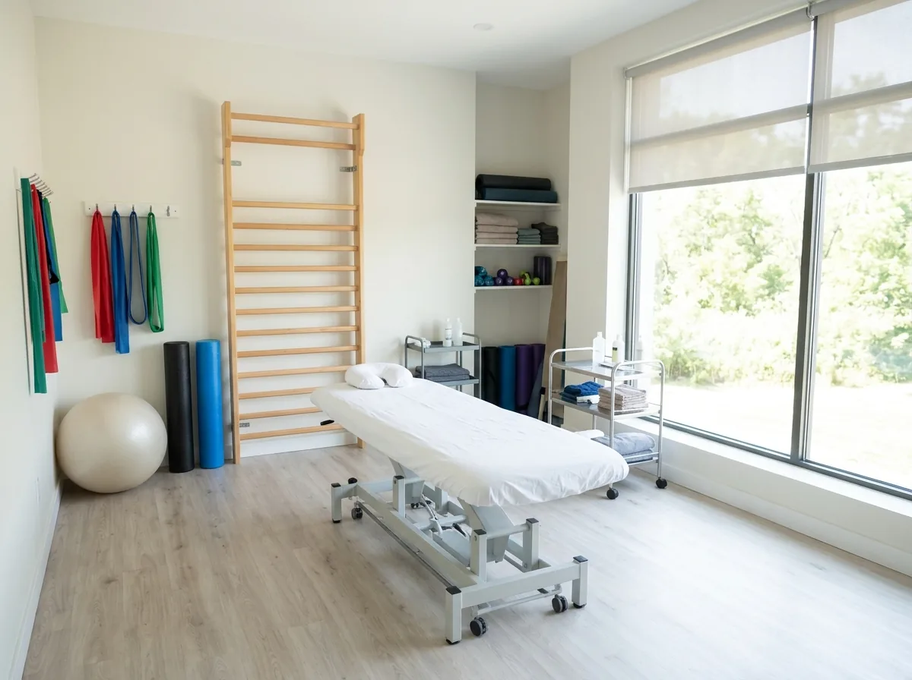
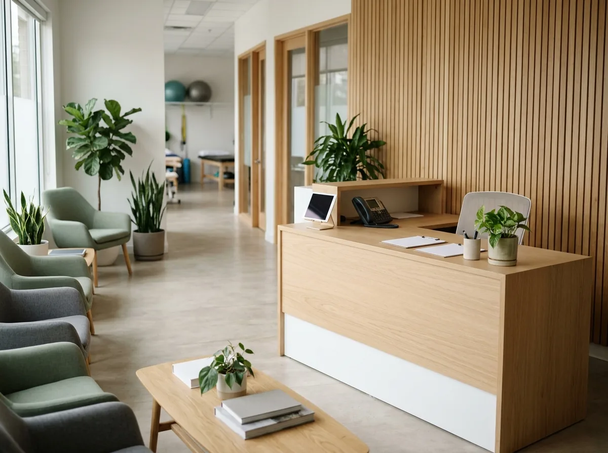

Chiamata in corso
+39 347 ••• •• 18
00:00 · risponde l'assistente automatico
Trascrizione dal vivo
Demo: la telefonata è simulata. Nella versione vera l'assistente risponde al numero dello studio quando la segreteria è occupata o chiusa, e lo dice sempre all'inizio.
Chiamate di oggi
Appuntamenti presi

Cosa dice e cosa fa

Frase di apertura
La parte "sono l'assistente automatico" non si può togliere.